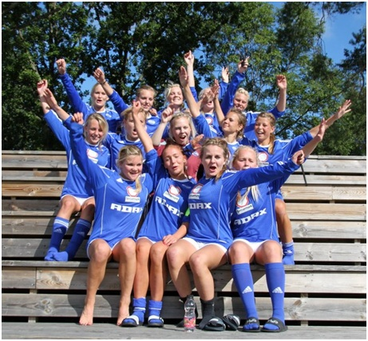

Regulile jocului au fost conturate la mijlocul secolului al XIX-lea pentru a standardiza regulile unei mari varietăți de jocuri asemănătoare, jucate în școlile din Marea Britanie. Regulile Cambridge, asemănătoare cu cele de astăzi, au fost create la Colegiul Trinity din Cambridge, în 1848, la o întâlnire a reprezentanților mai multor colegii: Colegiul Eton, Școala Harrow, Școala de Rugby, Colegiul Winchester și Școala
Shrewsbury. Dar, ele erau departe de a fi niște reguli universale. În anii 1850, s-au format multe cluburi, independente de școli sau universități, care jucau diferite forme de fotbal. Multe foloseau propriile lor reguli, cel mai bun exemplu fiind clubul Sheffield F.C. (format din foști elevi ai Scoala Harrow). Acesta a luat ființă în 1857, iar regulile create de ei au dus la formarea Federației de Fotbal Sheffield & Hallamshire, în 1867. În 1862, John Charles Thring de la Școala Uppingham a creat un alt set de reguli des folosit.
Aceste eforturi au condus la înființarea The Football Association (The FA) în 1863, care s-a întrunit pentru prima dată în dimineața zilei de 26 octombrie 1863, la Freemason's Tavern din Great Queen Street, Londra.[10] Singura școală care a fost reprezentată la această întrunire a fost Școala Charterhouse. Freemason's Tavern a fost locul de întâlnire al Federației pentru încă 5 întrevederi, între Octombrie și Decembrie.

În timpul acestora a luat naștere primul set cuprinzător de reguli. La ultima întâlnire, primul trezorier al FA, care era reprezentantul Blackheath și-a retras clubul din FA, din cauza excluderii din regulament, la întâlnirea precedentă, a două reguli de bază: prima era cea care permitea alergarea cu mingea în mâini și a doua, posibilitatea împiedicării adversarului prin lovirea sa în „fluierul piciorului, prin tragere sau prin ținere”. Alte cluburi englezești de rugby au urmat exemplul și nu s-au înscris în FA. Dar, în 1871, ele au format Federația de Rugby (Rugby Football Union). Cele 11 cluburi rămase în FA, sub conducerea lui Ebenezer Cobb Morley, au ratificat primele 13 reguli ale jocului.În ciuda acestora, clubul Sheffield a continuat să joace după propriile reguli, până în anii 1870.